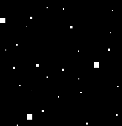

Siguiente: Diferencia absoluta entre el Subir: Método propuesto Anterior: Mejoras en la iluminación Índice General
Como es sabido, tanto el uso del método SURF para la extracción de ca-racterÃsticas como la búsqueda de coincidencias entre imágenes, conllevan un gran tiempo de procesamiento, el cual se convierte en un factor clave a la hora de lograr fluidez en la reproducción del flujo de video (37,6,15,28). Para ata-car este problema, se propone detectar la región de interés (parte cambiante del flujo de video) y asà aplicar el procesamiento sólo a una región de la imagen capturada. Para ello, se utilizan diferentes técnicas de procesamiento de imágenes en el siguiente orden: diferencia de imágenes, umbral, erosión, dilatación y detección del rectángulo delimitador mÃnimo. Estas herramientas, fueron elegidas debido a su simplicidad y al bajo tiempo de procesamiento que requieren, para no incrementar significativamente el tiempo de proceso total del algoritmo.
El objetivo es entonces, detectar la parte cambiante de la imagen entre un ciclo y el siguiente para realizar la extracción de caracterÃsticas en la zona de la escena que ha cambiado, asumiéndose un sistema en el que la cámara web se encuentra fija y lo que se mueve es el objeto en la escena. Para esto, se llevan a cabo una serie de pasos que se observan en la Fig. 3.3, a fin de determinar un área que contenga el cambio de la imagen. A continuación, se describen cada una de las operaciones realizadas, cuyos resultados parciales pueden verse en la Fig. 3.4.
|
[][Diferencia absoluta] [][Umbral binario] ![\includegraphics[width=2.3in]{../figs/preprocess/threshold}](img281.png)
[][Erosión ] [][Dilatación ] [][Rectángulo delimitador mÃnimo] |